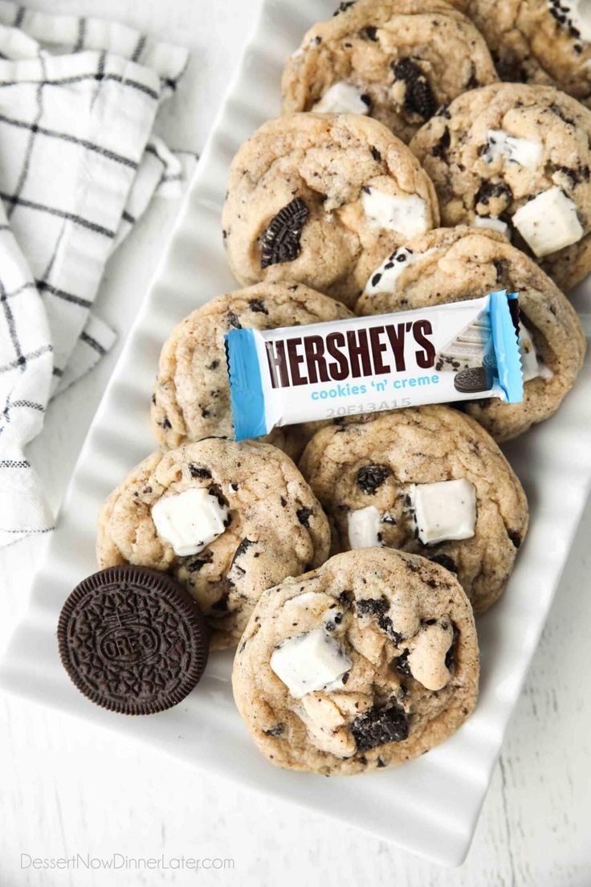
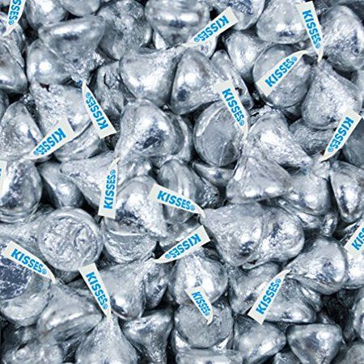
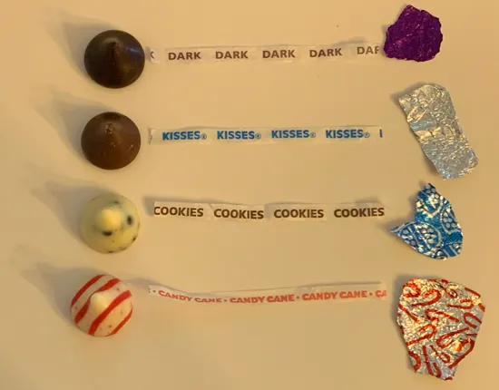
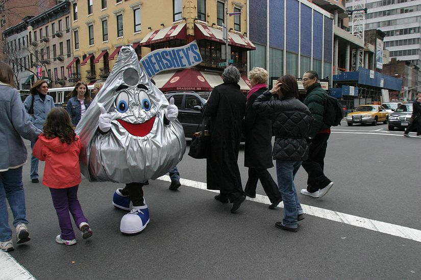
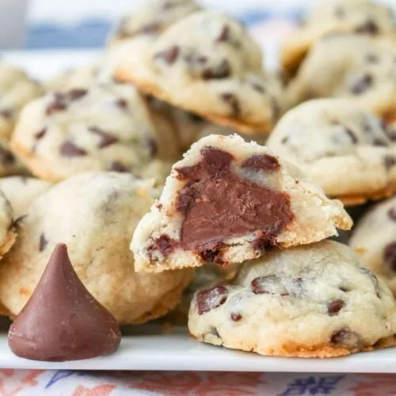

Intorduction :
Hershey's Kisses share a deep-rooted connection with the main Hershey's
chocolate brand, serving as a beloved extension of its rich heritage and
commitment to quality. While Hershey's Kisses boast their unique charm
and iconic shape, they're crafted from the same premium milk chocolate
that has made Hershey's synonymous with indulgence for generations. The
success of Hershey's Kisses is a testament to the company's dedication
to excellence and innovation, maintaining the same standards of taste
and craftsmanship that define the broader Hershey's chocolate range.
Whether enjoyed alone or alongside other Hershey's classics, Hershey's
Kisses remain an integral part of the brand's legacy, embodying the joy
and sweetness that Hershey's Chocolate has come to represent.

Appearence :
With their distinctive tear-drop shape and foil wrapping, Hershey's
Kisses are instantly recognizable. This simple yet elegant design adds
to their charm and makes them a favorite for gifting and sharing.

Varieties :
With their distinctive tear-drop shape and foil wrapping, Hershey's
Kisses are instantly recognizable. This simple yet elegant design adds
to their charm and makes them a favorite for gifting and sharing.

Iconic Traditions :
With their distinctive tear-drop shape and foil wrapping, Hershey's
Kisses are instantly recognizable. This simple yet elegant design adds
to their charm and makes them a favorite for gifting and sharing.

Irresistible Flavor :
Each Hershey's Kiss is crafted from creamy milk chocolate, delivering a
smooth and indulgent taste experience with every bite. Whether enjoyed
on its own or used as a versatile ingredient in baking and desserts, the
rich flavor of Hershey's Kisses is unmatched.